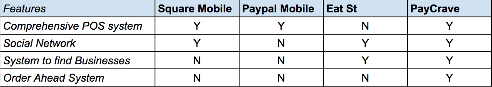

PayCrave
PayCrave has a simple goal: enhance the user experience for the food truck industry. PayCrave gives users an easy way to find food trucks, where they can order and pay ahead-of-time to reduce wait time for lines and enjoy their food quicker, thereby enhancing the overall food truck experience.
The Problem
Currently, users encounter a number of pain points during the food truck experience. The main 3 are:
The Solution
PayCrave has these features to enhance the user experience and ease pain points during the process:
Research
My process started off with brainstorming a user flow and coming up with user stories for what a typical user wanted out of their food truck experience.
From here I went on to gathering research data. I based our poll off of demographics and food truck habits, such as how often the user ate at food trucks, how they find food trucks, and what their largest pain point of the whole process was.
Survey can be seen here
Results can be seen here
After gathering user research, I did some preliminary competitive analysis to see if there was a viable solution to our existing problem already. The three apps I chose to look at were Square Mobile, Paypal Mobile and the Eat St. app.
Ideation
Upon completion of our competitive analysis and finding that no competitors offered all the features we wanted to incorporate, I began to ideate our logo and come up with a style guide for future work.
Choices going into the logo design included a way to tell that this app was for the food truck industry, in which I decided a simple outline of a food truck with utensils as an icon would suffice. Our style guide was based off complimentary pastel colors, with a red pastel as the primary color to invoke hunger.
Wireframing
After the style guide was finished, I went on to wireframe the app using Balsamiq.
Above are the 3 cards for the Food Truck, with the menu, a Menu Item overlay, and the review section. In total, we created wireframes for the following cards:
Click here to see all wireframes
Mockups
As I was designing my wireframes, I based my decisions on ensuring all my user stories were reflected in the design. After the wireframes were completed, I went on to design hi-fi prototype mockups. I went through several iterations of the food truck card, with the first version being decidedly old school with the Menu in white box surrounded by the frame of the phone (which, itself, is a box). Upon receiving feedback from my mentor, I decided to update the UI to more modern visual standards and spread out the elements to be full frame.
First Version
As a user, I want to select a truck, view details, and see a menu

After sending out the first version for some user feedback, I received feedback that the visual element of the food was the best part. Taking this into consideration, the addition of a pinwheel style “Featured Items” section was created in order to capitalize on the visual element as well as add a “fun” factor, while still keeping the usability of the list menu.
My goal for making most of the decisions in the design process was to make navigation as simplistic as possible, but have high visual content to encourage users to purchase food.
As a user, I want to create an account

For our user account, I wanted highlight two features specific to PayCrave:
As a user, I want to view recent transactions
Through PayCrave’s Order History, users could easily view past transactions, what they ordered at which food truck and the review that they left. Should they have forgotten to write a review, the Order History would indicate that so the users could complete their review from there. I felt as if this was a non-intrusive but easily designed way to encourage users to complete reviews, as data suggests that higher reviewed places always receive more customers.
As a user, I want to view food trucks near me in a list and save favorites
While PayCrave had the Browse card for an easy way to see food trucks within a certain proximity to the user on a map, I also wanted a way for the user to see all available food trucks within the app. Through Discover, the user could sort food trucks through several options:
I also wanted them to be able to save their favorite food trucks in a list, so the ability to reorder from favorites was an easier experience than trying to find them on a map or in the Discover list.
As a user, I want to choose items to purchase and pay for them using my phone
The last user story I included was the POS system in our app. On the food truck card, I wanted to include a very simple process for ordering:
Once finished, users could go to the shopping cart to complete their order. Customers were given a chance to review their order and select their default payment option (if they did not complete this in Account Settings, they would be able to add a card here).
After their order was confirmed, users were taken to an Order Summary screen, which had several options to enhance the user experience:
Prototyping
The final step was to send out our full prototype for user testing, record their feedback and make subsequent small changes to the app to reflect that feedback. Overall, the app was well received by the majority of users who tested it. Users enjoyed the visual aspect of the food, which they said helped them immensely in wanting to use the app. They also enjoyed the design and overall simplistic functionality of the app.
User Testing Feedback
Conclusion
Doubts
My doubts going into this project was that we wouldn’t be able to find a good balance between finding food trucks and the rest of the functionality of the app, with users not wanting to use the rest of the app after they had found the food trucks.
Surprises
What surprised me the most was how comprehensive the food truck card turned out to be, as my first version was a very simple list menu and review. I enjoyed ideating how to strike a good balance between usability and fun with the final design, in which the pinwheel would help engage the user.
More Time/Resources
If I had more time or resources, I would have made sure that user testing reached a larger audience since user research data is the backbone of good UX design.
Takeaways
I learned to refine my design process and fully develop a useable, fun app. This knowledge will definitely help me further on in future projects.